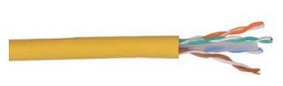
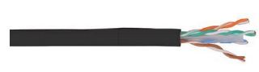

- Главная
- Продукция
- Кабельная продукция
- Витая пара IEK

Витая пара IEK
Продажа оптом и в розницу витой пары производства IEK (ITK)
Описание
- Размер скачиваемого файла 17 Мб
ITK имеет в своем ассортименте большой выбор надежных и высококачественных кабелей самых разных типов и категорий для локальных вычислительных сетей, для общей коммуникационной инфраструктуры зданий, для магистральных и горизонтальных подсистем и для "организации последней мили".
Благодаря современному высокотехнологичному оборудованию и качественным материалам изготавливаемые кабели обладают стабильными превосходными характеристиками, отвечающими самым современным международным стандартам и сохраняющимися на протяжении всего срока службы. Кроме того, кабели ITK совместимы с оборудованием для СКС других производителей, имеют понятную метровую маркировку длины и типа, сертифицированы по ГОСТ Р и и ТРТС.
В зависимости от конструкции кабеля, условий прокладки, области применения кабели связи ITK; представлены следующими основными группами:
Витая пара внутренней прокладки
- категории 5E экранированные и неэкранированные
- категории 6 экранированные и неэкранированные
- категории 6A и 7 экранированные;
- многопарные категории 3 и 5E.
Витая пара внешней прокладки
- категории 5E экранированные и неэкранированные
- категории 6 экранированные и неэкранированные;
- коаксиальный кабель RG6 и RG11.
Для оконцовки кабелей с целью их дальнейшего подсоединения к активному или пассивному оборудованию, подключения в модули типа Keystone Jack и информационные розетки, ITK изготавливает широкий перечень разъемов и защитных колпачков к ним. Разделка кабеля, обжим, заделка в модули и другие операции с кабелем осуществляются при помощи инструмента ITK®, разработанного специально для этих нужд.
Витая пара для внутренней прокладки
Наиболее распространенным типом кабеля, применяемым при организации кабельных систем и IT-инфраструктуры зданий, является кабель связи типа витая пара для внутренней прокладки. Он относится к классу симметричных электрических кабелей, применяется для передачи информации в Ethernet-сетях на частоте от 100 до 1000 МГц, обладает невысокой ценой и прост при монтаже.
Особенности конструкции
- В основе LAN-кабеля ITK® лежат пары, образованные двумя токопроводящими медными проводниками, покрытыми изоляцией из ПВХ или полиэтилена высокой плотности, скрученными между собой с определенным шагом повивки и защищенные внешней оболочкой.
- Токопроводящие проводники могут быть однопроволочными и многопроволочными. Последние применяются в кабелях, используемых для изготовления коммутационных шнуров (патч-кордов).
- Кабели в зависимости от рабочей частоты делятся на категории 5Е, 6, 6А, 7 (в соответствии с ISO/IEC 11801:2002(E) и ГОСТ Р 54429).
- Количество пар под оболочкой в зависимости от типа витой пары варьируется от 1 до 100; они могут быть экранированными и неэкранированными.
- Оболочка витой пары для внутренней прокладки в основном производится из ПВХ (PVC), полиэтилена (PE) или материала на основе комбинаций полиэтилена, поливинилхлорида и специальных добавок, замедляющего горение, малодымного и не содержащего галогенов в продуктах горения (LSZH), и также может быть неэкранированной или экранированной фольгой, металлической лентой или оплеткой из металлических проволок.
- На всех кабелях ITK® нанесена маркировка с указанием категории кабеля, количества пар, типа и диаметра медного проводника, а также мерные метки длины через каждый метр.
- LAN-кабели поставляются в картонных коробках на катушках по 305 и 500 метров либо на барабанах.
Преимущества
- Применимы для сетей ISDN, 10baseT, 100baseT, 1000baseT, EIA RS 232/485, 155 Mbit ATM, Token Ring.
- Соответствие международным стандартам.
- Расширенный частотный диапазон.
- Экранированные кабели прекрасно защищают сети от больших электромагнитных помех и излучений.
- Проводники витых пар изготовлены из высококачественной электротехнической меди Т1.
- Возможно исполнение в оболочках, соответствующих нормам пожарной безопасности.
- Большой выбор типов кабеля в зависимости от требований и нужд заказчика.
- Удобная и понятная маркировка.
- Минимальные сроки поставки.
- Сертификация на соответствие ГОСТ Р и ТР ТС.
Витая пара для внешней прокладки
Для тех случаев, когда кабель связи требуется проложить вне помещений, например, по наружной стене здания, на крыше, в коллекторе, шахте, телефонной канализации при организации горизонтальных или вертикальных подсистем СКС и объединении коммутационных узлов, расположенных в разных зданиях, необходимо использовать кабель с повышенной прочностью внешней оболочки и устойчивый к жестким погодным условиям. Для этих целей и задач в ассортименте ITK предусмотрены LAN-кабели категории 5Е и 6, превосходно работающие в диапазоне 100-500МГц и отвечающие самым современным международным стандартам.
Особенности конструкции
- В основе LAN-кабеля ITK® для внешней прокладки лежат витые пары, образованные двумя медными однопроволочными жилами, покрытыми изоляцией из полиэтилена высокой плотности, скрученными между собой с определенным шагом повивки.
- Витые пары защищены внешней оболочкой, которая изготавливается из полиэтилена повышенной прочности, устойчивого к ультрафиолетовому излучению и большими перепадами температур. Для случаев, когда оболочка подвергается повышенным воздействиям внешней среды, ее изготавливают из двухслойного покрытия: наружного из полиэтилена низкой плотности и устойчивого к ультрафиолетовому излучению (LDPE) и внутреннего из ПВХ.
- Для лучшей устойчивости к электромагнитным помехам под оболочкой может быть защитный экран.
- Витая пара внешней прокладки представлена категориями 5Е и 6 (в соответствии с ISO/IEC 11801:2002(E) и TIA/EIA-568-B.2).
- Количество пар под оболочкой в зависимости от типа LAN-кабеля варьируется от 2 до 100, они могут быть дополнительно экранированы фольгой, металлической лентой или оплеткой из металлических проволок.
- На все кабели ITK® нанесена маркировка с указанием категории кабеля, количества пар, типа и диаметра медного проводника, а также
- мерные метки длины через каждый метр.
- Витая пара поставляется на барабанах по 305, 500 и 1000 метров.
Преимущества
- Увеличенная прочность внешней оболочки и устойчивость к УФ-излучению.
- Расширенный диапазон рабочих температур и температуры прокладки.
- Применимы для сетей PBX, ISDN, 10baseT, 100baseT, EIA RS 232/485, Token Ring, ТВ.
- Соответствие международным стандартам.
- В рабочем диапазоне частот передаточные характеристики кабеля ITK® превосходят граничные значения, определяемые стандартами.
- Проводники витых пар изготовлены из высококачественной электротехнической меди Т1.
- Возможно исполнение в оболочках, соответствующих нормам пожарной безопасности.
- Большой выбор типов кабеля в зависимости от требований и нужд заказчика.
- Удобная и понятная маркировка.
- Минимальные сроки поставки.
- Сертификация на соответствие ГОСТ Р и ТР ТС.
Продажа витой пары
Компания является официальным дилером крупнейшего российского производителя электротоваров IEK, который выпускает собственную IT-продукцию под торговой маркой ITK. Поэтому мы можем предложить лучшие цены на витую пару данного бренда. Кабель доступен как оптом, так и в розницу. Большой ассортимент в наличии на складе, а под заказ Вам доступна вся линейка витой пары от ITK (бренда IEK).
Если Вы хотите кабель витую пару в розницу по низким ценам, Вы можете сделать это в магазине Электромаркет г. Хабаровск или в магазинах ООО "ТД"Электросистемы" в Комсомольске-на-Амуре, Благовещенске, Биробиджане. Адреса указаны в разделе сайта КОНТАКТЫ.
Если Вы хотите заключить договор на оптовые поставки по индивидуальным условиям, Вам нужно свзяаться с менеджерами по телефонам, указанным для Вашего региона в разделе сайта КОНТАКТЫ.